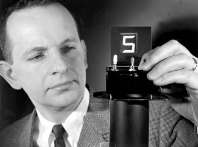

First of all, to all those who celebrate, Happy Star Wars Day!
I’m pausing the previous series on the feasibility of an ocean-based industrial-scale cistern until more meat is on the bones. It’s still an intriguing thread, but there seem to be so many possible design options that it doesn’t make sense to continue until there’s something more solid to throw darts at—stay tuned.
Also, I’ve decided that I want my weekends back, so this, and future, weekly installments will come out at the close of business (wherever I am) on Thursdays rather than Sundays. For me, post-COVID life is back in full swing.

When I joined ARPA-E back in 2010, the fledgling agency was trying to learn the ropes from its older, wiser (and more well-funded) sibling, DARPA. As a result, I became acquainted with “ The Heilmeier Catechism ”, a set of 8 questions crafted by George Heilmeier (DARPA Director 1975-1977) to steer funding away from bullshit projects that lacked impact. [Notably, this rubric has been adopted by the younger (but exceedingly well-funded) agency, ARPA-H, the health-related ARPA.] Since leaving ARPA-E, I’ve found this device to be a beneficial structure for evaluating investment opportunities, acknowledging that investment opportunities are often coated in artisanal BS.
In today’s installment, I thought it’d be instructional to try to answer these probative questions for the first climate control solution 1 I covered in this serial. As a refresher, the proposal was to mass-produce self-contained desalination vessels in shipyards, accessing the energy in a nuclear reactor to drive the process. This achieves climate control through profitable direct air capture of carbon dioxide using irrigation agriculture on otherwise marginal land.
Question 1: What are you trying to do? Articulate your objectives using absolutely no jargon.
To effectively address “climate change” and “the climate crisis”, the overall objective must be climate control , the bold assertion of human influence over planetary weather. The more specific goal is to rationally adjust the composition of Earth’s atmosphere to stabilize familiar weather patterns that have existed for most of human history. Achieving this objective will preserve the status quo that has allowed humans to flourish. Failing to accomplish this objective is what seems to drive the current angst.
The specific mechanism of climate control, through irrigation of arid land, is well established and supported by decades of primary data. Moreover, it is the natural mechanism employed by the geophysical chemistry of the planet.
Question 2: How is it done today, and what are the limits of current practice?
On the one hand, the problem is that there is no “current practice” to refer to! But, we know that human action can change the atmosphere's composition through the combustion of geologic carbon and have documented the ability of the biosphere to regulate the most abundant problem gas, carbon dioxide.
On the other hand, the countless approaches to “solving climate change” that are being pursued, including electrification, renewables, biofuels, etc., are limited because they only address future human actions. Moreover, these approaches rely on achieving “net zero” combustion of geologic carbon in the next few decades and maintaining that practice for centuries. Any continued use of geologic carbon for energy (the activity that has propelled human economic development since the Industrial Revolution) must shoulder both the financial and the thermodynamic burden of carbon capture, not just at a time and place in the future but forever and everywhere.
Most disturbingly, even if this lofty goal is achieved, it cannot reach the objective stated in Question 1 because of the atmospheric changes we’ve already caused.
In a narrower sense, both desalination and nuclear power, as practiced today, are land-based and site-specific. Because installation logistics dictate that operations are based close to urban centers, safety, and waste disposal become limiting factors.
Question 3: What is new in your approach and why do you think it will be successful?
Taking the second part first, the approach will be successful from a technical perspective because it combines proven technologies—the main reason it might not be successful is inaccurate or variable cost estimates. The novelty lies in what it doesn’t do. It doesn’t rely on an unproven solution subject to unforeseen risks. It doesn’t rely on artificial markets for financial viability. It doesn’t rely on full compliance with geopolitical agreements for success.
What it does do, however, is to consider scalability and time-to-climate impact as fundamental design criteria. Admittedly, the approach doesn’t require a technology breakthrough and might not cut it as a DARPA program. But that’s a feature, not a bug.
Question 4: Who cares? If you are successful, what difference will it make?
This is a tricky question to answer with humility. Of course, everyone should care; it’ll make all the difference in the world. Literally.
In the near term, though, it will directly affect farmers growing crops on irrigated land. For them, water is a necessary resource, and their livelihood is directly affected by the initial tremors of actual climate change—namely, the droughts and deluges that you see reported on the news. For those businesspeople, it’ll mean the difference between viability and ruin.
Question 5: What are the risks?
The main risk at scale and using established technologies is execution—it’s more of a construction project than a moonshot. Still, the engineering has to be rigorous, the cost estimates must be comprehensive, and the regulatory environment must be cultivated.
Question 6: How much will it cost?
This is always a tricky question, mainly because proposers habitually decrease costs using the accounting method of “leaving shit out.” Also, because this is envisioned as the first of many assembled units, the first-of-a-kind is unlikely to hit an economically-attractive cost target. Regardless, this will be summarized as a “levelized cost”, which divides the capital cost of the installation by its (projected) lifetime, adding yet another convenient variable for projected cost reductions.
A similar calculation 2 has estimated the cost of a 1.2 GWe nuclear electricity plant assembled in a shipyard to be $150M, with an additional $128M 3 for a compatible desalination plant, with a production capacity of 6,500 acre-feet per day and an operating cost of around $200 per acre-foot, exclusive of capital servicing. These estimates are undoubtedly optimistic, so let’s double the capital costs to about $650M as a guesstimate. Note that, as specified, the system would have a positive operating margin on day 1. Heck, let's round that up to an even $1B—it’s still cheaper than the Apollo program (estimated $250B in today's dollars).
Question 7: How long will it take?
This is likely limited by regulatory clearance and funding availability. It could take decades with public resistance (like many land-based nuclear plants) or a few years with public demand (like COVID-19 vaccine production). Finally, it depends on gaining political buy-in and popular support, particularly in the science/technology chattering class. That’s my way of saying, “Only God knows.”
Consider that we have 30 years before IPCC’s modelers tell us that we will burn in Hell if we don’t achieve engineering net zero. By that point, I’ll be pushing up daisies. For the rest of you, it’s time to consider the destructiveness of deliberation—it took less than 18 months to construct the Seattle Space Needle from a drawing on a napkin. And it took less than a decade for NASA to put a man on the moon. [Fortunately, we had only one moon to shoot for.] We can do this.
Question 8: What are the mid-term and final “exams” to check for success?
The first milestone will be an engineering design that can be manufactured today with a more precise cost projection for the first-of-a-kind and n th plant production. Like in the Apollo program, the engineers for such a project would have reasonably wide latitude for creativity but would have to be held accountable for realistic cost and time estimates.
The mid-term exam would need to quantify the significant cost drivers for mass production of the first-of-a-kind system today and project likely improvements due to demand signals in the supply chain as the production of desalination systems becomes more routine.
The final exam is like the Apollo program—to launch a fully self-contained, seaborne desalination ship and to have it deliver irrigation water to a near-shore agricultural operation within the next 5-10 years.
So there you have it. Put yourself in the position of the decision-maker on this proposal. Do you fund it with public dollars? [For comparison, DOE’s budget in 2023 is $160B, and NASA’s is $23B.] Or do you think there’s a better or more worthwhile project to support?

Ingersoll, E., & Gogan, K. “Missing Link to a Livable Climate: How Hydrogen-Enabled Synthetic Fuels Can Help Deliver the Paris Goals”, Chapter 6, “Cost Reduction from Shipyard Manufacturing”, available at lucidcatalyst.com
See Figure 10 in advisian.com